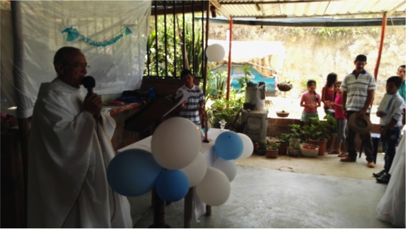
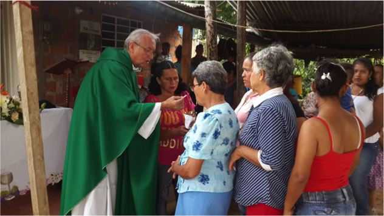
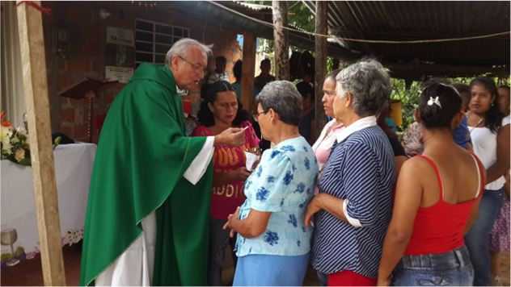
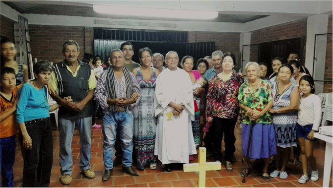
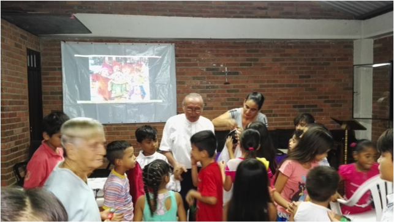
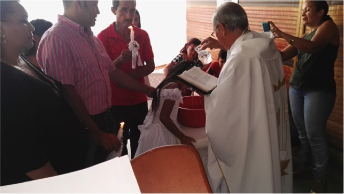
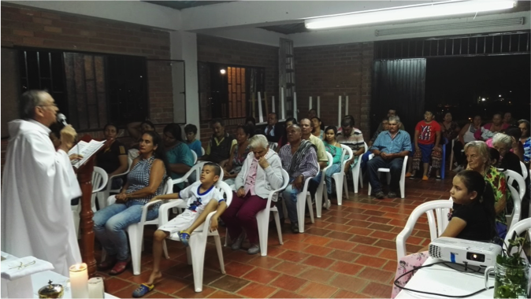
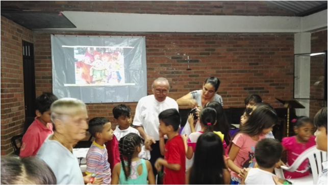
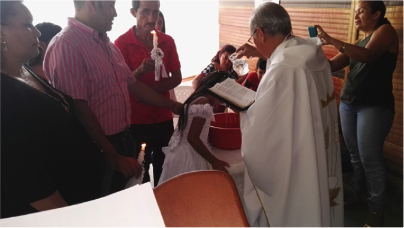
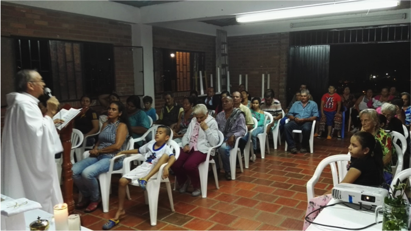

PARROQUIA SANTA MARIA DEL CAMINO
Se inicia en Enero de 2016 en un conjunto residencial estrato 2 del municipio de Girón (Brisas Campestres) y por inconvenientes nos trasladamos, a petición de algunas personas, al Barrio la Meseta y allí nos prestan el salón comunal y comenzamos a celebrar la Santa Eucaristía todos los domingos a las 6 de tarde.
En esta Comunidad comenzamos una vez a la semana los estudios bíblicos con una buena participación.
Hicimos visita a los hogares para bendecirlos y acompañarlos en sus dificultades.
Celebramos las novenas de Aguinaldo con la participación de 84 niños del barrio.



MISIÓN SAN PABLO APOSTOL
Esta comunidad se encuentra un poco retirada del casco urbano del municipio de Girón y es un asentamiento que se ubico en una espe-cie de colina y esta compuesta por familias desplazadas del conflicto y en condiciones muy precarias, no tienen servicios públicos y lo po-co que hay lo organiza la misma comunidad con sus propios medios, su entrada es prácticamente una trocha.
Se comenzó a atender en el mes Junio de este año(2017) celebran-do la santa Eucaristía todos los domingos a las 10 de la mañana.
Hace cuatro meses se inicio la catequesis para la primera comunión y se inscribieron 23 niñ@s y actualmente hay 15 que con la ayuda del Señor harán su primera comunión el día 8 de diciembre del presente año.
Se han ministrado cuatro Bautismos y se espera que el día 8 de Dic. Reciban el Sacramento de la Confirmación 25 personas de la comunidad.


Se convocó a los padres de la comunidad para iniciar el curso preparatorio y se inscribieron 23 niños y se hicieron las 8 primeras clases todos los días sábados a de 2 a 4 de la tarde.
Y cuando el padre German adjunto a la comunidad de la Santa Cruz, comenzó a denigrar de nuestro trabajo, solamente quedaron 3 niños y no pudimos continuar nuestra labor catequética
Seguidamente a esto algunas personas de la comunidad cuestionaron nuestro trabajo misionero, por los mismos comentarios del sacerdote antes dicho y nos quitaron el salón comunal.
Aún así seguimos celebrando la Santa Eucaristía todos los domingos en las casas de algunos fieles de la iglesia



CATEQUESIS PARA PRIMERAS COMUNIONES.
Se convocó a los padres de la comunidad para iniciar el curso preparatorio y se inscribieron 23 niños y se hicieron las 8 primeras clases todos los días sábados a de 2 a 4 de la tarde.
Y cuando el padre German adjunto a la comunidad de la Santa Cruz, comenzó a denigrar de nuestro trabajo, solamente quedaron 3 niños y no pudimos continuar nuestra labor catequética
Seguidamente a esto algunas personas de la comunidad cuestionaron nuestro trabajo misionero, por los mismos comentarios del sacerdote antes dicho y nos quitaron el salón comunal.
Aún así seguimos celebrando la Santa Eucaristía todos los domingos en las casas de algunos fieles de la iglesia

